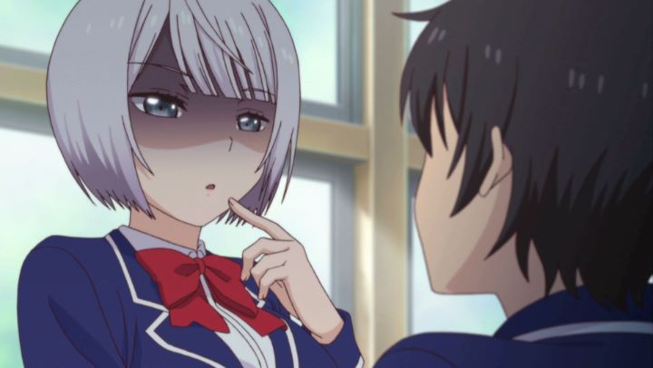

It's tough for an anime to succeed in such a saturated market. One strategy is to purposely shock the audience through its promotional material, in order to have them at least watch the first episode. It's hard to be more blatent than "My Girlfriend is Shobitch," a show with a title that's likely to turn heads and horrify mothers everywhere. To be clear, "Shobitch" itself isn't necessarily a form of foul language, even though it sounds like it. Since it's a shortened version of the full Japanese title's phrase "shojo bicchi," which roughly translates to "virgin slut," it's hard to make a case for it not being offensive no matter how you look at it. Which is a shame, since the show itself is actually not as mean-spirited as you might imagine.This romantic-comedy is mostly just a slice-of-life thing, showcasing the interactions of a core cast of characters. Therefore, there isn't really a story, and certainly not anything satisfying enough to be called an ending. The premise is that average boy Haruka finally gets the courage to ask cute fellow student Akiho to be his girlfriend. Akiho appears quiet and shy, but accepts, and this being her first relationship, vows to be a good girlfriend. Which, in her mind, means to be sexually active and open, far more than Haruka was expecting. The truth of the matter is that both Haruka and Akiho haven't been in a relationship before. Both are virgins, and don't really know anything about sex (other than what they've seen or heard from the Internet). Akiho in particular had trouble making even regular friends up to this point. A little too eager to please, Haruka politely changes the subject whenever Akiho suggests a lewd activity, insisting that isn't what he's after (at least not while they're both young and in high school). All the same, Akiho seems shy anyway, barely able to show the courage to hold Haruka's hand. As they start dating, Haruka's friends (all girls) continue to tease and flirt with him too, not because they are sexually interested, but just as teenagers having fun. One is his little sister, one is a childhood friend. One girl transfered from an all-girls' school, and seems to have "experience" from her time there. On the opposite side, one of the only other male characters not-so-subtly lusts for Haruka, much to Akiho's horror (while he remains oblivious). We also meet Akiho's parents: we see from her mother where Akiho gets her sexual-imagination, and her father is alone with Haruka in thinking that everyone is going a little too far. Most of the students are only talking about it (although a few hints suggest that both the students, and adult school nurse, are more active than we'd dare to confirm). Wordplay and visual gags abound in every conversation. Most episodes consist of short skits that range from 30 seconds to 10 minutes long. It would have been easy and expected for "My Girlfriend is Shobitch" to become another male-fantasy-harem-romantic-comedy, but the general lack of "competition" or "danger" makes the show feel surprisingly pleasant and safe. I'd even go so far as to state that the jokes feel more appropriate for a female audience than a male one. The tone is similar to other anime shows like "Yamada's First Time" or "Shimoneta," which allow a female perspective to be in on the perverted jokes.  But are the jokes funny? Unlike "Shimoneta," sex jokes are frequent and creatively varied. Unfortunately, a good number of jokes get lost in translation, either due to pacing or reliance on Japanese. The English translation ultimately doesn't try to hard to adapt the jokes to a new audience, keeping some jokes literal, even when they no longer make sense in the dub. Some unusual slang is used, like the term "excitement magazines" to refer to porn. Of the two leads, neither is particularly interesting: the big joke with Akiho is how she can always suggest sex with a straight face and dull delivery. I guess as I kept watching, I did grow more fond of the characters, and had a few hard laughs whenever the jokes went farther than expected. But that's being a little kind. I didn't expect much from the series, and it was better than expected in some ways, and worse in others. One example is the show's relatively short 10-episode length, with each episode ending with a hint of a story taking place at a love hotel, exclusively shown as a bonus OVA only included in the home video release: a unecessary tactic to get Japanese fans to buy the Bluray. That OVA includes the only shot of real nudity, in one of two fantasy scenes; it's fine, but caters more to the male audience, which feels at odds with the rest of the show. The other big issue were the production values. Simply put, "My Girlfriend is Shobitch" does not look great. Character designs rely on big faces with small mouths, big eyes with big pupils and half-closed eyelids, making characters constantly look suggestive. It always looked "off" to me. Characters also tend to appear off-model, and what little animation there is doesn't look great. Sentai Filmworks in America seemed proud to have produced an English dub, and the cast seems to have had fun with the show's naughty humor, even recording a bizarre in-character "commentary theater" as a bonus feature, but the dub suffers due to how well (or not) the jokes translate. I guess I'm a little "stiff" on "My Girlfriend is Shobitch." If I look "deeper" and try "harder" to enjoy it, I might become "sensitive" with laughter. Or maybe not. The show is a fun diversion for the perverted-at-heart, but I can't imagine recommending it to anyone. Expect maybe couples looking to watch a comedy together. Seriously, it'd be fun, and might give you both a few ideas.
- "Ani" More reviews can be found at : https://2danicritic.github.io/ Previous review: review_My_Entire_High_School_Sinking_Into_The_Sea Next review: review_My_Hero_Academia